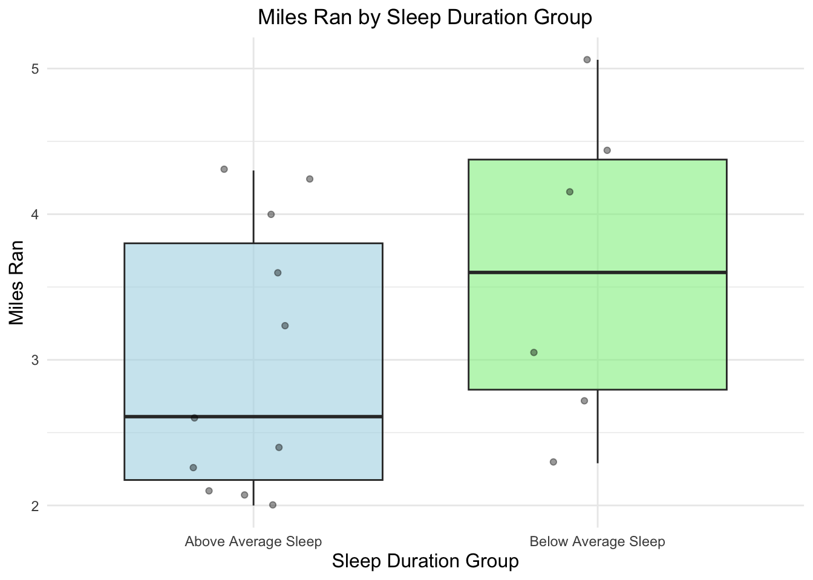
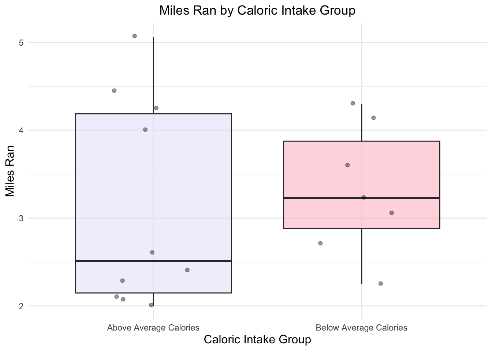

── Attaching core tidyverse packages ──────────────────────── tidyverse 2.0.0 ──
✔ dplyr 1.1.4 ✔ readr 2.1.5
✔ forcats 1.0.0 ✔ stringr 1.5.1
✔ ggplot2 3.5.2 ✔ tibble 3.2.1
✔ lubridate 1.9.4 ✔ tidyr 1.3.1
✔ purrr 1.0.4
── Conflicts ────────────────────────────────────────── tidyverse_conflicts() ──
✖ dplyr::filter() masks stats::filter()
✖ dplyr::lag() masks stats::lag()
ℹ Use the conflicted package (<http://conflicted.r-lib.org/>) to force all conflicts to become errors
library(here)
here() starts at /Users/katefrankland/ENVS-193DS/homework3/homework3
library(gt)library(janitor)
Attaching package: 'janitor'
The following objects are masked from 'package:stats':
chisq.test, fisher.test
library(readxl)library(ggplot2)
Problem 1
Data Summarizing
For my data, I am interested in my response variable of the amount of miles ran, and how my mileage is influenced by the explanatory variables of caloric intake and sleep duration. I would like to take the mean of each of these explanatory variables, and then use the mean to determine levels of lower than average or higher than average caloric intake or sleep duration. I would then calculate the mean number of miles ran for each group.
This comparison is informative as it could help me gauge the conditions under which I perform best, and help me further understand how fueling and rest influence my running performance.
Visualization
#cleaning data personal_data <-read_csv(here("data", "ES193DS_running_data .csv")) # read in the data
Rows: 38 Columns: 10
── Column specification ────────────────────────────────────────────────────────
Delimiter: ","
chr (3): date, pace, weather
dbl (6): caloric_intake, daily_calories_burned, sleep_duration_hours, miles...
time (1): time
ℹ Use `spec()` to retrieve the full column specification for this data.
ℹ Specify the column types or set `show_col_types = FALSE` to quiet this message.
personal_data <- personal_data %>%#cleaning the data clean_names()
# find the mean for sleepmean_sleep <-mean(personal_data$sleep_duration_hours, na.rm =TRUE) # calculating the mean for sleep, na.rm = TRUE is being used just in case there are NA values in the data # filter the column for above average sleep above_avg_sleep <- personal_data %>%filter(sleep_duration_hours > mean_sleep) # creating a new data set where sleep is above average# filter the column for below average sleepbelow_avg_sleep <- personal_data %>%filter(sleep_duration_hours < mean_sleep) # creating a new data set where sleep is below the average
# find the mean for caloric intake mean_calories <-mean(personal_data$caloric_intake, na.rm =TRUE) # calculating the mena f or sleep, na.rm = TRUE is being used just in case there are NA Values in the data # filter for above average caloric intake above_avg_caloric_intake <- personal_data %>%filter(caloric_intake > mean_calories) # creating a new data set where caloric intake is above average # filter for below average caloric intake below_avg_caloric_intake <- personal_data %>%filter(caloric_intake < mean_calories) # creating a new data set where caloric intake is below average
#group sleep data personal_data <- personal_data %>%mutate(sleep_group =if_else(sleep_duration_hours > mean_sleep, # using mutate to create 'sleep_group'"Above Average Sleep", # if sleep is greater than the mean sleep and is TRUE, it will be above average sleep "Below Average Sleep")) # if sleep is less than the mean sleep, it will be FALSE, and will be below average sleep
#group calorie datapersonal_data <- personal_data %>%mutate(caloric_group =if_else(caloric_intake > mean_calories, # using mutate to create 'caloric_group'"Above Average Calories", # If caloric intake is greater than the mean calories and is TRUE, it will be labeled as "Above Average Calories""Below Average Calories")) # If caloric intake is lower than the mean calories, it will be FALSE and labeled as "Below Average Calories"
# summarize by group sleep_summary <- personal_data %>%# create sleep_summary table group_by(sleep_group) %>%# group data by the sleep_group column that was previously created summarize(mean_miles_ran =mean(miles_ran, # calculate the mean of miles_ran for between groups na.rm =TRUE)) # ignoring any NA values # creating a summary for calorie_summarycaloric_summary <- personal_data %>%group_by(caloric_group) %>%# group data by the caloric_group columnsummarize(mean_miles_ran =mean(miles_ran, # calculate the mean of miles_ran between groups na.rm =TRUE)) # ignoring any NA values
ggplot(personal_data, #create the plot using personal data aes(x = sleep_group, # set the x axis to the sleep group y = miles_ran, # set the y axis to the miles ran fill = sleep_group)) +# fill color will be determined based on sleep group geom_boxplot(alpha =0.6, # creating a boxplot, making boxplots a little transparent with alpha outlier.shape =NA) +# removing outliers geom_jitter(width =0.2, # adding jitter plots, spreading horizontally alpha =0.4, # alpha is used tor transparency color ="black") +# coloring the jitter points scale_fill_manual(values =c("lightblue", "lightgreen")) +# customizing colors labs( #adding titles and axis titles title ="Miles Ran by Sleep Duration Group", # plot title x ="Sleep Duration Group", # x axis label y ="Miles Ran"# y axis label ) +theme_minimal() +# use a minimal theme theme(legend.position ="none") +# remove the legend theme(plot.title =element_text(hjust =0.5), # center the plot title axis.title.x =element_text(size =12), # increase the font size axis.title.y =element_text(size =12) # increase the font size )
Warning: Removed 21 rows containing non-finite outside the scale range
(`stat_boxplot()`).
Warning: Removed 21 rows containing missing values or values outside the scale range
(`geom_point()`).

caption - Figure 1: This figure is displaying the distribution of miles ran based on two groups of sleep data; either below oe above average. This boxplot can help visualize how I perform with different amounts of rest.
ggplot(personal_data, # using personal data aes(x = caloric_group, # set the x axis to caloric group y = miles_ran, # set the y axis to miles ran fill = caloric_group)) +# fill color determined by group geom_boxplot(alpha =0.6, # creating a boxplot, making them a little transparent with alpha outlier.shape =NA) +# removing outliers geom_jitter(width =0.2, # adding jitter points, spreading horizontally alpha =0.4, # alpha is used for transparency color ="black") +# coloring the jitter points scale_fill_manual(values =c("lavender", "pink")) +# customizing colors labs(title ="Miles Ran by Caloric Intake Group", # plot title x ="Caloric Intake Group", # x axis label y ="Miles Ran"# y axis label ) +theme_minimal() +# use a minimal theme theme(legend.position ="none") +theme(plot.title =element_text(hjust =0.5), # center the title axis.title.x =element_text(size =12), # increase the font size axis.title.y =element_text(size =12) # increase the font size )
Warning: Removed 21 rows containing non-finite outside the scale range
(`stat_boxplot()`).
Warning: Removed 21 rows containing missing values or values outside the scale range
(`geom_point()`).

caption - Figure 2: This boxplot displays distribution of miles ran based on two caloric intake groups, either an above or below average daily intake, with each point representing an individual day of data. This plot suggests that there is a slight correlation between days with higher caloric in takee and higher mileage, although there is some variability.
# Create a summary table for caloric and sleep groups combinedsummary_table <- personal_data %>%group_by(sleep_group, caloric_group) %>%# grouping dat aby both sleep and caloric intake groups summarize(mean_miles_ran =round(mean(miles_ran, # calculating the mean of miles ran for each group, round to one decimal place na.rm =TRUE), 1)) %>%# ignoring NA values in the calculation ungroup() # removing grouping
`summarise()` has grouped output by 'sleep_group'. You can override using the
`.groups` argument.
# Use gt to create the tablesummary_table %>%gt() %>%tab_header(title ="Mean Miles Ran by Sleep and Caloric Intake Group"# adding a title ) %>%cols_label(sleep_group ="Sleep Group", # renaming the column header caloric_group ="Caloric Intake Group", # renaming the column header mean_miles_ran ="Mean Miles Ran"# renaming the column header ) %>%fmt_number(columns =c(mean_miles_ran), # identifying particular column we want to format decimals =2# format the mean miles ran column to show two decimal places )
Mean Miles Ran by Sleep and Caloric Intake Group
Sleep Group
Caloric Intake Group
Mean Miles Ran
Above Average Sleep
Above Average Calories
2.80
Above Average Sleep
Below Average Calories
3.30
Below Average Sleep
Above Average Calories
3.90
Below Average Sleep
Below Average Calories
3.30
Problem 2
Describe in words when an affective visualization could look like for your personal data
For my personal data, I believe that an affective visualization could look like a weekly timeline or calendar, with each day a different shape depending on if I ran or not; another option would be to have the days in the shapes of clouds or suns depending on the weather outside. Considering that I am using sleep and caloric intake to understand my mileage, a visualization using a color or heat gradient could be used as well to better understand the relationship between sleep, calorie intake, and performance, creating a visualization that is more visually engaging.
Create a sketch (on paper) of your idea
Visual Data Sketch
Draft of visualization
Sketch of Affective Visualization
Artist Statement
For my visualization, I took inspiration from Stefanie Posavec and Giorgia Lupi’s Dear Data project. I created a postcard-style design similar to that ot the Dear Data project that uses different shapes and colors to represent key aspects of my data. For example, a circle indicates a day when I did not run, while a square represents a running day. A green line beneath some squares highlights days when I ran more than my average of 2.8 miles. The colors inside the shapes reflect whether my caloric intake was above or below average. I chose this format because it reminds me of a bullet journal, offering a personal and creative way to track my running, nutrition, and mileage.
Problem 3
Revisit and Summarize
A multiple linear regression is used; the response variable is the dolphin encounter rate which is measured as the number of dolphins per kilometer surveyed. The predictor variables are the water temperature (C), salinity (ppt), and the interaction between the water temperature and salinity.
Visual Clarity
Figure 3 on this critique has clear axes displaying temperature vs predicted encounter rates, and salinity vs predicted encounter rates (dolphins/km), with a breakpoint line at 23.37 degrees Celsius. The axes are positioned logically, and the solid lines for model predictions are clearly visible. However, there is an absense of confidence intervals and summary statistics that could be insightful for the reader to assess the fit of the model.
Aesthetic Clarity
I would describe this figure as having a high data to ink ratio. The figure is minimal, but some key components are difficult to see and understand. For example, each tick on the x axis represents an observation, but the tick marks are very small, making it challenging to get a full idea of the amount of observations that were collected. Additional small details that should be considered include the font size on the axes, which makes the figure difficult to read.
Recommendations
Recommendations I have to enhance this figure could be to overlay raw data points and 95% confidence interval bands on the regression lines, which could better illustrate the data distribution and model uncertainty. A redesign of the figure as a heatmap could help the reader have an enhanced visual understanding of the relationship between temperature and interactions. Lastly, the readability of the figure could also be improved by increasing axes label fonts, making the tick marks larger, and labeling the intervals more clearly.